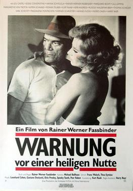

Rainer Werner Fassbinder
1971
103 minutes
This is a slowly-unrolling Fassbinder film about filmmaking. It's one of those plots about a troubled production. The first half of this film has everyone idling around in a weird Waiting for Godot sort of way in a resort hotel for a paternalistic godlike director you're not even sure is going to arrive. It's languid and boring and everyone is bored and tense and sad and drinking too much but not having a good time. Eddie Constantine from Alphaville (not within these pages, sadly) is here, playing himself, which is weird but not nearly as weird as Peter Falk playing himself in Wings of Desire. He mostly just reacts to the weirdness of other actors.
Eventually the director shows up (by helicopter), and the mood takes a turn from being anxious and bored and miserable to just being anxious and miserable. It's immediately obvious why no one was looking forward to his appearance on the scene for any reason other than getting done with the miserable doomed film they are making as soon as possible.
The whole thing is like a darker, sadder version of Truffaut's Day for Night from Section 240, which you'll get to soon enough if you haven't been there already.
You're lucky enough where the director doesn't remind you of any proper boss you've ever had, but he does remind you a bit of one terrifying de facto boss you had, one of the dispatchers you had when you drove a cab. His surname was Penn so many of the drivers nicknamed him "Pig Pen", or "Piggy" for short. Like all your dispatchers, Piggy was not technically your boss, especially on a busy night where you could just ignore calls on the radio and mostly rely on flags. And that job was anarchistic enough were you could, to some degree, simply turn down calls and tasks. But if you angered him enough on this account he could turn around and make your life miserable on a different night. He had little tolerance for fuckups, and he was extremely unforgiving. You did your best to keep your name out of his mouth.
Piggy was terrifying, but he at least had some humanizing quirks. He loved his gin (but usually not on shift) and he loved playing pool. He lived a short walk away from the cab office, but he would always take a cab ride to and from his shift. You never had the nerve to charge him for either of these privileges. Having him in your cab felt like transporting a fussy god. He was not of superhuman appearance, but to your knowledge you've never described his physical appearance to anyone because it felt like sacrilege. At some point during most of his shifts he would demand someone bring an offering of a half-gallon of two percent milk to the office for him to drink. Drivers would immediately respect this request, even if it cost them momentum and money out of their pocket. Whoever was closest to the convenience store near the cab office would immediately fulfill his wish to mollify the wrath of the cab gods.
In the end, Piggy was not immortal. After you quit driving, he acquired some manner of disease that tore quickly through him as soon as he was diagnosed and he didn't last for long. You had moved away and you were informed of his passing by a friend who still worked there. You asked him whether you should pour out a glass of two percent milk in his honor. Your friend, a devout buddhist, informed you that this was a bad idea and was only like to send his raging vengeful soul screeching in from the bardo for your sentimentality and superstition and for wasting good milk.
The great god Pan is dead.
Time to choose something different: